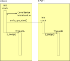

对称多处理
在多处理器架构上，Zephyr 支持使用多个物理 CPU 运行 Zephyr 应用程序代码。这种支持是“对称”的，即默认情况下不会对任何特定 CPU 做特殊处理。任何处理器都能运行任何 Zephyr 线程，并可访问所有受支持的标准 Zephyr API。
使用这一特性无需编写任何特殊的应用程序代码。如果在受支持的双处理器设备上有两个可运行的 Zephyr 应用程序线程，它们会同时运行。
SMP 配置由 Kconfig 变量 CONFIG_SMP 控制。必须将其设为“y”才能启用 SMP 特性，否则将构建单处理器内核。一般来说，在所有支持 SMP 的平台上，平台默认配置都已启用该选项。启用后，可用物理 CPU 的数量在构建时由 CONFIG_MP_MAX_NUM_CPUS 给出。同样，该选项的默认值就是平台上可用的 CPU 数量，一般应用程序不需要修改它。但出于特殊目的（例如测试，或预留一个物理 CPU 运行非 Zephyr 代码），将其设为更小的值（显然不能更大）是合法且受支持的。
同步
在应用程序层面，Zephyr 的核心 IPC 和同步原语在 SMP 内核下的行为完全相同。例如，用信号量实现阻塞式互斥仍然是应用程序的合适选择。
但在最底层，Zephyr 代码经常使用 irq_lock()/irq_unlock() 原语，通过屏蔽中断来实现细粒度的临界区。这些 API 通过一个模拟层（见下文）仍然可用，但屏蔽中断这一技术本身已经失效：你的 CPU 在临界区内不会被中断，并不能说明另一个 CPU 是否正在同时运行并读取或修改同一份数据！
自旋锁
SMP 系统提供了约束更严格的 k_spin_lock() 原语。它像 irq_lock() 一样在本地屏蔽中断，同时以原子方式保护一个共享的锁变量，从而保证同一时刻只有一个 CPU 进入临界区。与传统的 IRQ 锁不同，自旋锁彼此独立，并且不得递归获取。完整说明（包括票据自旋锁和 API 参考）参见 自旋锁。
传统 irq_lock() 的模拟
为了照顾按单处理器加锁 API 编写的应用程序，irq_lock() 和 irq_unlock() 在 SMP 系统上仍可兼容使用，语义与其传统版本完全相同。它们实现为一个全局自旋锁，带有嵌套计数，并能在上下文切换到持有锁的线程时以原子方式重新获取锁。内核保证任何时刻所有 CPU 上只有一个线程能持有该锁，上下文切换时会释放该锁，并在线程被切换回来时按需重新获取，以恢复其加锁状态。其他 CPU 会自旋等待锁被释放。
不过，这一过程带来的开销对性能有可测量的影响。与单处理器应用程序不同，使用 irq_lock() 的 SMP 应用程序调用的不只是一个非常短（通常约 1 条指令）的中断屏蔽操作。再加上 IRQ 锁是全局的，因此预期在 SMP 环境中运行的代码应尽可能使用自旋锁 API。
内存一致性
有些多处理器架构是 缓存不一致 的：各 CPU 的缓存之间不会自动保持一致，因此一个 CPU 写入的数据在从缓存刷出之前，另一个 CPU 可能看不到。在这类系统上，共享的内核数据结构必须位于所有 CPU 都能一致观察到的内存中。
启用 CONFIG_KERNEL_COHERENCE 后，内核会把所有共享数据放入多处理器一致（通常是非缓存）的内存中。线程栈仍然使用缓存，用 __incoherent 显式声明的应用程序内存也是如此。该模式仅适用于运行在缓存不一致架构上的 SMP 内核，并且隐含一个 API 约定：传给内核的任何内存都被假定为缓存一致的，因此不得在非缓存区域中创建内核数据结构。
CPU 掩码
实时应用程序常常希望主动地把工作划分到各个物理 CPU 上，而不是完全依赖内核调度器决定执行哪些线程。Zephyr 提供了一个由 Kconfig 变量 CONFIG_SCHED_CPU_MASK 控制的 API，可以为每个线程关联一组特定的 CPU，表示该线程可以在哪些 CPU 上运行。
默认情况下，新线程可以在任何 CPU 上运行。以某个 CPU ID 调用 k_thread_cpu_mask_disable() 后，该线程今后将不能在那个 CPU 上运行。同样，k_thread_cpu_mask_enable() 会重新允许其在该 CPU 上执行。为方便起见，还提供了 k_thread_cpu_mask_clear() 和 k_thread_cpu_mask_enable_all() API。显然，对可运行的线程调用这些 API 是非法的。线程必须处于阻塞或挂起状态，否则将返回 -EINVAL。
三种调度器后端都支持 CPU 掩码过滤，但对性能的影响因后端而异：
CONFIG_SCHED_SIMPLE：对运行队列做 O(N) 线性扫描；每次上下文切换都要遍历整个链表，查找第一个符合条件的线程。CONFIG_SCHED_SCALABLE：对红黑树做 O(N) 中序遍历；优先级顺序得以保留，但当大量线程被掩码排除时，可能需要遍历整棵树。CONFIG_SCHED_MULTIQ：从高到低扫描各优先级桶，并遍历每个桶内的链表；最坏情况为 O(P·N)，其中 P 是已占用的优先级数量。
对于使用 CONFIG_SCHED_CPU_MASK_PIN_ONLY 的场景，每个 CPU 维护各自独立的运行队列，因此调度器只需检查该队列，没有掩码过滤的开销。
注意，在 CONFIG_SCHED_CPU_MASK_PIN_ONLY 模式下不允许使用 k_thread_cpu_mask_clear()、k_thread_cpu_mask_enable_all() 和 k_thread_cpu_mask_disable()，因为它们可能产生不恰好只有一位的掩码，从而违反每个线程都恰好绑定到一个 CPU 的不变式。
SMP 启动过程
Zephyr SMP 内核的启动开头与单处理器内核完全相同。辅助 CPU 在架构层中一开始处于禁用状态。所有标准的内核初始化（包括设备初始化）都在单个 CPU 上完成，然后才让其他 CPU 上线。
在即将进入应用程序的 main() 函数之前，内核调用 z_smp_init() 启动 SMP 初始化过程。该函数遍历所有已配置的 CPU，对每个 CPU 调用架构层的 arch_cpu_start()。传给该函数的参数包括：一块在目标 CPU 上用作栈的内存区域（实际使用的是之后将成为该 CPU 中断栈的区域）、要在该 CPU 上运行的本地回调函数 smp_init_top() 的地址，以及一个指向“启动标志”地址的指针，该标志用作原子信号。
随后，架构层在每个 CPU 上调用本地 SMP 初始化例程（smp_init_top()）。注意此时中断仍处于屏蔽状态。该例程负责调用 smp_timer_init()，在定时器驱动中设置所需的状态。在许多架构上，定时器是每个 CPU 独有的设备，需要在辅助 CPU 上专门配置。然后它（自旋）等待主线程释放原子“启动标志”，以确保在任何 Zephyr 应用程序代码运行之前所有 SMP 初始化都已完成，最后调用 z_swap()，通过标准调度器 API 把控制权交给相应的可运行线程。

默认情况下，内核在这一启动序列中启动所有可用的 CPU。如果某个 CPU 的设备树节点带有 zephyr,deferred-start 标志，则会跳过该 CPU，使其保持禁用状态，以便架构、SoC、开发板或应用程序代码稍后在运行时启动它；延迟启动是按 CPU 设置的，因此系统可以在启动时启动部分辅助 CPU，而让其他 CPU 按需启动。延迟启动的 CPU 通过 k_smp_cpu_start() 启动，该函数会执行完整的每 CPU 初始化；与之对应的 k_smp_cpu_resume() 用于让先前停止的 CPU 重新上线，而不重复一次性初始化。
处理器间中断
在多处理器环境中运行时，有时本地 CPU 上修改的状态需要在另一个处理器上同步处理。
一个例子是 Zephyr 的 k_thread_abort() API，它必须等到被终止的线程不再可运行时才能返回。如果该线程当前正在另一个 CPU 上运行，实现起来就比较困难。
另一个例子是低功耗空闲。许多设备都有一项硬性要求：系统空闲必须使用低功耗模式实现，并尽可能多地禁用或推迟中断（包括周期性定时器中断）。如果一个 CPU 处于这种状态，而另一个 CPU 上有线程变为可运行，空闲的 CPU 就无法“醒来”处理新的可运行负载。
因此，Zephyr SMP 架构应尽可能实现处理器间中断（IPI）。目前的框架非常简单：架构至少要提供 arch_sched_broadcast_ipi() 调用，调用时会在所有 CPU 上触发中断（当前 CPU 除外，不过在当前 CPU 上也触发也是允许的）。如果架构支持定向 IPI（参见 CONFIG_ARCH_HAS_DIRECTED_IPIS），则架构还要提供 arch_sched_directed_ipi() 调用，调用时会在指定的 CPU 上触发中断。当这些 CPU 上触发中断时，调度器中实现的 z_sched_ipi() 函数会在这些 CPU 上被调用。预计这些 API 会随时间演进以涵盖更多功能（例如跨 CPU 调用），并且这里与调度器相关的调用将基于更通用的框架来实现。
当定向 IPI 可用时，调度器在线程就绪时只通知真正需要重新调度的 CPU，而不是向其他所有 CPU 广播。这样可以避免打扰那些当前运行线程无需被抢占的 CPU，降低总体中断负载。
注意，并非所有 SMP 架构都有可用的 IPI 机制（可能缺失，或者只是没有文档/未实现）。在这些情况下，Zephyr 提供了正确但可能不够理想的后备行为。
借助 IPI，k_thread_abort() 在 SMP 中只是稍微复杂一些：当线程确实正在另一个 CPU 上运行时（我们可以在调度器内部以原子方式检测到这一点），我们广播一个 IPI 并自旋，等待该线程变为“DEAD”，或等待它重新进入队列（此时按单处理器模式下的相同方式终止它）。注意，“已终止”检查在每次中断退出时都会进行，因此 IPI 本身不需要特殊处理。这使我们能够在 IPI 不可用时实现合理的后备方案：只需自旋，等待目标 CPU 收到任意中断即可，不过这可能要花长得多的时间！
同样，空闲唤醒只需一个空的 IPI 处理函数即可轻松实现。如果有线程被加入空的运行队列（即可能存在空闲的 CPU），我们就广播一个 IPI。目标 CPU 在从中断退出时就能看到这个新线程，并在可能时切换到它。
然而，如果没有 IPI，需要中断才能唤醒的低功耗空闲就无法同步运行新线程。这种情况下的变通方案更具侵入性：Zephyr 不会 进入系统空闲处理函数，而是在其空闲循环中自旋，以很高的频率检查调度器状态是否有新线程（但不会在其上自旋等待，因为那会造成严重的锁竞争）。预期功耗受限的 SMP 应用程序总会提供 IPI，这段代码只会用于测试目的或没有功耗要求的系统。
IPI 级联
内核无法控制系统中各 CPU 处理 IPI 的顺序。一般来说这不成问题，一组 IPI 就足以在 N 个 CPU 上触发重新调度，使它们调度执行优先级最高的 N 个就绪线程。而在使用 CPU 掩码时，可能存在不止一组能在这 N 个 CPU 上调度的有效线程组合（不要与最优线程组合混淆），一组 IPI 可能不足以得到其中任何一个有效组合。
备注
不使用 CPU 掩码时，最优线程组合与有效线程组合相同。但使用 CPU 掩码时，可能存在不止一个有效组合，其中之一可能是最优的。
为了更好地说明二者的区别，考虑一个双 CPU 系统，其中就绪线程 T1 和 T2 的优先级分别为 1 和 2。设 T2 绑定到 CPU0，而 T1 未绑定。如果 CPU0 正在执行 T2、CPU1 正在执行 T1，则该组合既有效又最优。但如果 CPU0 正在执行 T1 而 CPU1 处于空闲，则该组合同样有效，但不是最优的。
在一组 IPI 不足以产生有效组合的情况下，最终正在执行的线程组合预计会接近某个有效组合，并且通常可以预期后续的 IPI 很快就会纠正这种情况。然而，如果这种近似和延迟都不可接受，启用 CONFIG_SCHED_IPI_CASCADE 后，内核将生成级联 IPI，直到为各 CPU 选出一个有效的就绪线程组合为止。
IPI 级联会带来三类开销/代价，因此默认处于禁用状态。第一类是产生 IPI 的 CPU 在新线程抢占旧线程时承担的开销，因为必须把旧线程与其他 CPU 上正在执行的线程进行比较。第二类是接收 IPI 的 CPU 承担的开销，因为它们必须处理这些 IPI。第三类是由于上述第一类开销引发的级联，线程会表现出时断时续的现象，即先“闪入”再“闪出”。
IPI 工作项
内核允许开发者使用一个或多个 IPI 工作项，在 ISR 级别于其他 CPU 上执行函数。使用 k_ipi_work_add() 把 IPI 工作项加入指定 CPU 的工作队列后，目标 CPU 会在收到 IPI 后处理这些工作项。通过调用 k_ipi_work_signal() 发送 IPI。通过调用 k_ipi_work_wait() 等待目标 CPU 完成某个 IPI 工作项。同一时刻只允许一个等待者。
备注
IPI 工作项只会被加入其他 CPU 的 IPI 工作队列。如果在线程级别添加 IPI 工作项，开发者必须确保当前线程在发送 IPI 之前不会切换到其他 CPU。
使用示例
以下代码概述了如何在一个 CPU 处理 ISR 后，使用 IPI 工作项更新一组 CPU 上的状态信息。
struct k_ipi_work my_work;
void remote_cpu_action(struct k_ipi_work *arg)
{
...
}
void my_isr(void)
{
/*
* Wait for previous use of <my_work> to complete.
* It assumes that <my_work> was initialized elsewhere.
*/
uint32_t cpu_mask = <bitmask identifying CPUs to update>;
while (k_ipi_work_wait(&my_work, K_NO_WAIT) == -EAGAIN) {
}
/* Add and signal the new work */
k_ipi_work_add(&my_work, cpu_mask, remote_cpu_action);
k_ipi_work_signal();
}
SMP 内核内部机制
一般来说，Zephyr 内核代码与 SMP 无关，并且与应用程序代码一样，无论有多少个可用 CPU 都能正确工作。但在少数方面，其结构或行为有明显变化。
每 CPU 数据
在 SMP 模式下，核心内核数据中的许多元素需要为每个 CPU 分别实现。例如，_current 线程指针显然需要反映本地正在运行的线程，因为有许多线程在并发运行。同样，内核提供的中断栈需要为每个物理 CPU 分别创建和分配，用于检测 ISR 状态的中断嵌套计数也是如此。
这些字段现在被移到 _kernel 结构体中一个独立的 _cpu 结构体实例里，该结构体包含一个按 ID 索引的 cpus[] 数组。为了兼容使用旧语法和汇编偏移量访问 cpus[0] 字段的传统单处理器代码，还提供了兼容字段。
注意，对架构层的一项重要要求是：在内核上下文中必须能快速获得指向该 CPU 结构体的指针。预期 arch_curr_cpu() 会借助 CPU 提供的寄存器或寻址模式来实现，该寄存器或寻址模式能在任意上下文切换或中断期间保存这个值，并供所有内核模式代码使用。
同样，在单处理器系统上，Zephyr 只需创建一个最低优先级的全局“空闲线程”，而在 SMP 中可能需要为每个 CPU 各创建一个。这使得调度器中内部谓词“_is_idle()”的判断（这是一条对性能敏感的热路径）不再只是简单比较线程指针与某个已知静态变量是否相等，而是更复杂。在 SMP 模式下，空闲线程通过线程结构体中的一个独立字段来区分。
基于 switch 的上下文切换
传统的 Zephyr 上下文切换原语是 z_swap()。遗憾的是，该函数没有指定要切换到哪个线程的参数。一直以来的预期是：调度器在最近一次修改其状态时已经做出了抢占决策，并把得到的“下一个线程”指针缓存在某个位置，架构的上下文切换原语可以通过简单的结构体偏移量找到它。这种技术在 SMP 中行不通，因为自当前 CPU 上次退出调度器以来，另一个 CPU 可能已经修改了调度器状态（例如，它可能已经在运行那个被缓存的线程了！）。
因此，SMP 中“切换到哪个线程”的决策需要与切换调用同步做出；又由于我们不希望由各架构的汇编代码来处理调度器内部状态，Zephyr 要求 SMP 系统提供更底层一些的上下文切换原语：arch_switch() 总是在中断被屏蔽时调用，并且正好接受两个参数。第一个参数是一个不透明的（由架构定义的）句柄，指向要切换到的上下文；第二个参数是指向此类句柄的指针，用于存放被换出线程所产生的句柄。内核随后在该原语之上实现可移植的 z_swap()，其中包含相关的调度器逻辑，因而架构无需理解这些逻辑。
同样，在中断退出时，基于 switch 的架构应调用 z_get_next_switch_handle()，从调度器获取下一个要运行的线程。z_get_next_switch_handle() 的参数要么是被中断线程的“句柄”（与 arch_switch() 使用的不透明类型相同），要么是 NULL（如果该线程暂时还不能交还给调度器）。选择句柄值还是 NULL，取决于 CPU 中断模式的实现方式。
具有大型 CPU 寄存器组的架构通常在被中断时只把调用者保存的寄存器保存在当前线程的栈上，以尽量降低中断延迟；而只在调用 arch_switch() 时才保存被调用者保存的寄存器，以尽量降低上下文切换延迟。这类架构必须以 NULL 作为 z_get_next_switch_handle() 的参数来判断是否有新线程需要调度：如果有，则继续执行其自身的 arch_switch() 或其派生实现；否则直接退出中断模式。对于前一种情况，由切换代码负责在被换出线程的上下文完全保存之后，把该线程产生的句柄存入其“switch_handle”字段。
如果架构在进入中断模式时就已经保存了完整的线程状态，则可以直接把该线程的句柄传给 z_get_next_switch_handle()，一步完成。
注意，虽然 SMP 要求启用 CONFIG_USE_SWITCH，但反过来并不成立。将 CONFIG_SMP 设为 No 构建的单处理器架构，仍可选择使用 arch_switch() 实现其上下文切换。
线程队列排序
在 SMP 系统中，当一个线程被另一个更高优先级的线程抢占时，它会被移到其所在优先级队列的末尾。相比之下，在单处理器（UP）系统上，被抢占的线程不会移到其优先级队列的末尾，而只是等待重新获得 CPU，从而保持其相对于同优先级其他线程的原有顺序。